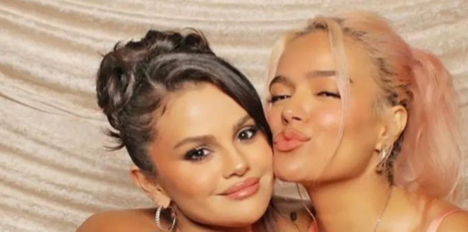
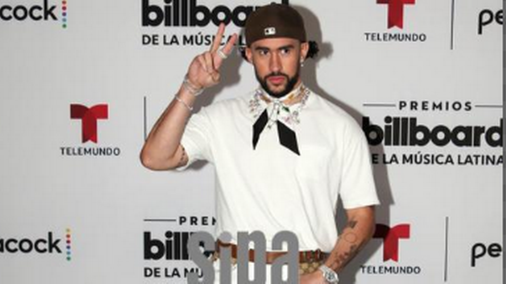

Últimas Noticias de la Farándula
Selena Gomez Anuncia Nueva Música y Colaboración con KarolG
La multifacética artista Selena Gomez ha revelado que lanzará nueva música este mes. Además, ha compartido que estará colaborando con Karol G en un tema muy esperado. Los fanáticos están emocionados por esta nueva dirección en su carrera, que promete ser un regreso triunfal a la escena musical.

Premios Billboard 2024: Bad Bunny Se Lleva el Galardón a Artista del Año
En la reciente ceremonia de los Premios Billboard 2024, Bad Bunny fue reconocido como Artista del Año, consolidando su estatus como una de las figuras más influyentes de la música latina. Su impacto en la industria ha sido innegable, y su actuación en vivo dejó a todos los asistentes impresionados.

El Estreno de 'Dune: Parte Dos' Supera Expectativas en Taquilla
La tan esperada secuela 'Dune: Parte Dos' ha llegado a los cines y ha superado las expectativas en taquilla. Dirigida por Denis Villeneuve y protagonizada por Timothée Chalamet y Zendaya, la película ha recibido críticas positivas tanto de la audiencia como de los críticos, estableciendo nuevos récords de ventas.